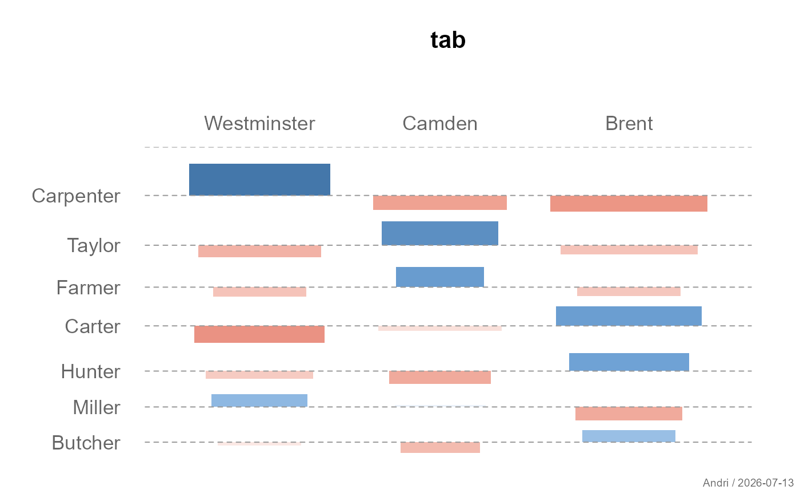
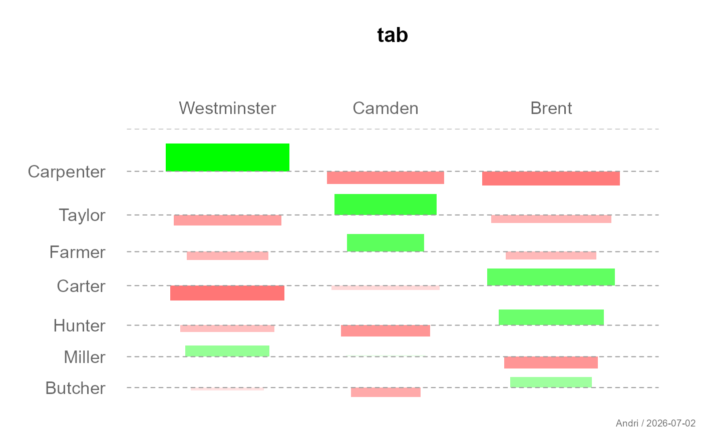
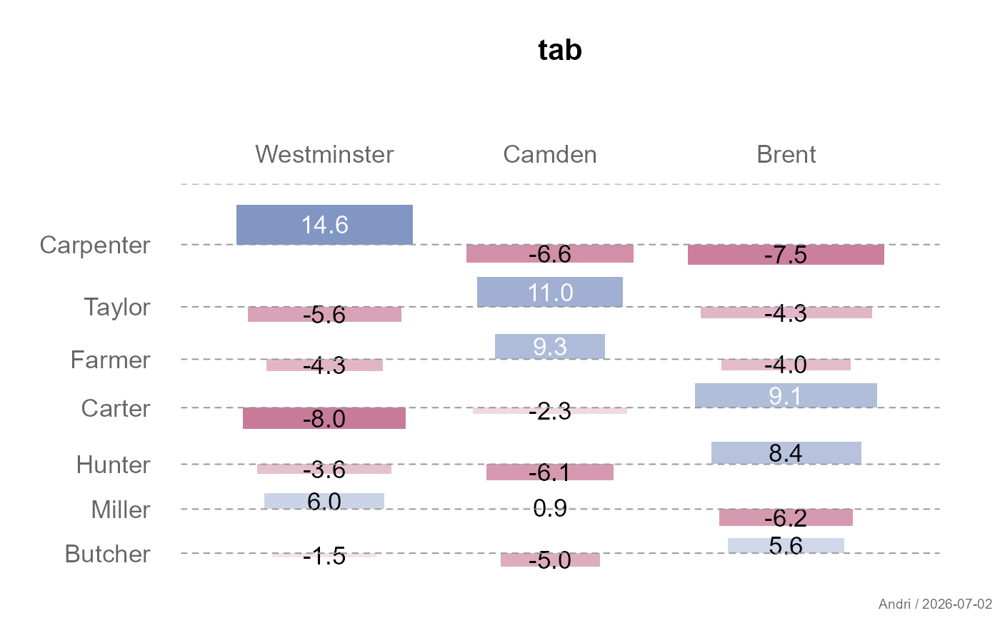
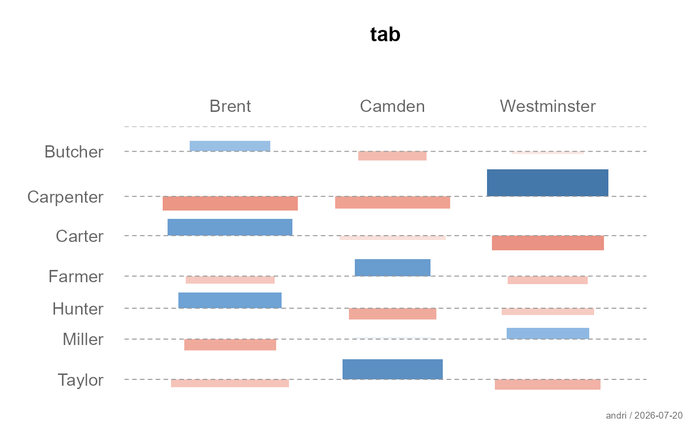
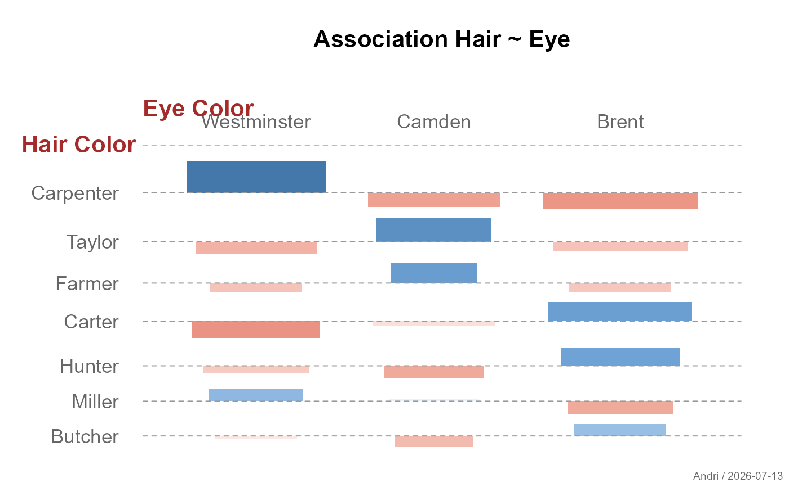
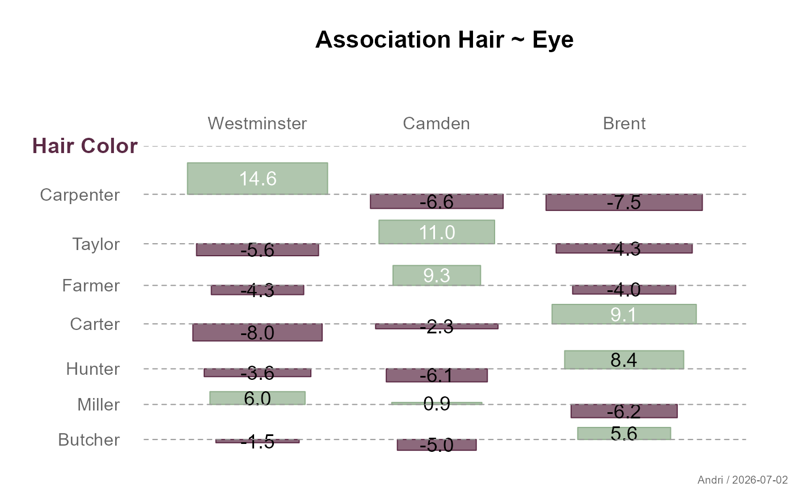

Plots an association plot (Cohen-Friendly plot) for a two-dimensional contingency table. Cells are drawn with widths proportional to the square root of expected frequencies and heights proportional to Pearson residuals. Color encodes both the direction and strength of the association using a diverging palette.
Usage
plotAssoc(
x,
main = NULL,
xlab = TRUE,
ylab = TRUE,
space = 0.3,
reorder = TRUE,
col = pal("RedWhiteBlue3", n = 100L),
border = NA,
labels = FALSE,
stamp = .useTheme,
...
)Arguments
- x
a two-dimensional contingency table (
tableormatrix).- main
main title of the plot.
NULL(default) derives a title from the expression passed asx(viadeparse(match.call()$x)), the same "substitute magic" convention used byplotXY/plotBoxfor theiry ~ xdefault - there's no formula pair here, just the single table argument, so the default is simply that expression's text (e.g.plotAssoc(tab)titles itself"tab")."",NA, orFALSEsuppress the title entirely and compact the top margin; any other string is used as given (resolved internally via.resolveTitle()).- xlab
character, x-axis label. Defaults to the first dimension name.
- ylab
character, y-axis label. Defaults to the second dimension name.
- space
numeric, fraction of average cell width/height used as gap between cells. Default
0.3.- reorder
logical. If
TRUE(default), rows and columns are reordered by the strength of the strongest association (max(|residual|)) in descending order.- col
character vector of colors for the diverging palette. Default uses
pal("RedWhiteBlue3", n = 100)from the DescToolsX theme. Negative residuals map to the first color, zero to the middle, positive to the last.- border
the color of the border
- labels
logical or character. If
TRUE, Pearson residuals are printed inside each cell. IfFALSE(default), no labels are shown. A character format string (e.g."%.1f") can also be passed for custom formatting.- stamp
Controls the corner stamp.
.useTheme(default) resolves togetTheme()$stamp.TRUE/FALSE/NULL, or an explicit string, as for.withGraphicsState()(internal).- ...
further arguments passed to
rect.
Details
The plot is based on the association plot described in Cohen (1980) and Friendly (1992). Each cell \((i,j)\) is represented by a rectangle:
width proportional to \(\sqrt{e_{ij}}\) (square root of expected frequency)
height proportional to the Pearson residual \(d_{ij} = (f_{ij} - e_{ij}) / \sqrt{e_{ij}}\)
A horizontal baseline at zero represents independence. Cells above the baseline indicate positive association, cells below negative association.
Color encodes both direction and magnitude: the diverging palette runs from the negative color (strong negative residual) through white (no association) to the positive color (strong positive residual).
References
Cohen, A. (1980). On the graphical display of the significant components of a two-way contingency table. Communications in Statistics — Theory and Methods, 9, 1025–1041.
Friendly, M. (1992). Graphical methods for categorical data. SAS User Group International Conference Proceedings, 17, 190–200.
See also
Other plot.bivariate:
plotBag(),
plotCor(),
plotDens2D(),
plotHeatmap(),
plotHexbin(),
plotMosaic(),
plotXY()
Examples
tab <- table(bedrock::Pizza$driver, bedrock::Pizza$area)
# default
plotAssoc(tab)

# custom palette
plotAssoc(tab, col = pal("RedWhiteGreen", n = 100))

# with residual labels
plotAssoc(tab, labels = TRUE)

# no reordering
plotAssoc(tab, reorder = FALSE)

plotAssoc(tab,
main = "Association Hair ~ Eye",
cutoff = 1,
xlab="Hair Color", ylab="Eye Color")

cols <- pal()[c(12, 8)]
plotAssoc(tab,
main = "Association Hair ~ Eye",
cutoff = 1,
col = fade(cols, 0.7), border = cols,
reorder = TRUE, cex.axis = 0.9,
xlab = list(labels = "Hair Color ",
col = "#5B2A45", cex = 1.1),
ylab = NA, labels = TRUE)
